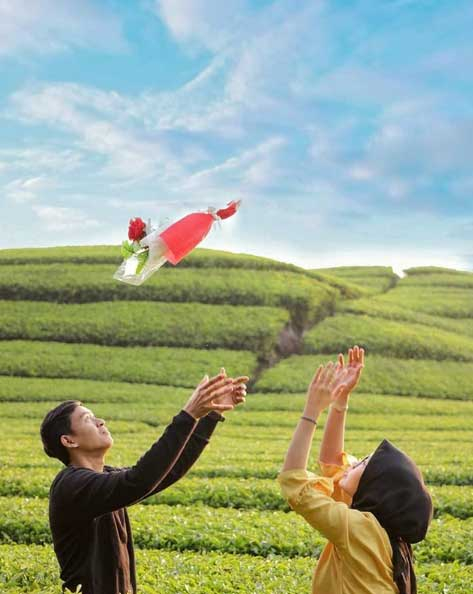

Kebun teh Rancabali sudah beberapa tahun terakhir ini seperti menjadi obyek wisata baru bagi kalangan wisatawan. Berada di salah satu wilayah Bandung Selatan, Ciwidey, kebun teh ini mampu menyedot perhatian para pecinta wisata alam.Suasana asri berpadu kesejukan kala pagi membuat hamparan kebun teh ini memang layak jadi tempat mampir. Lokasinya juga sangat mudah dikunjungi karena berada di samping jalan raya. Pengunjung tidak perlu repot karena tinggal menepikan kendaraan langsung sampai di kawasan wisata keren ini.
Harga Tiket Masuk Kebun Teh Rancabali
Kebun teh yang terhampar luas di samping jalan ini merupakan perkebunan teh terluas di Ciwidey. Berada di ketinggian sekitar 1.628 mdpl membuat tempat ini sejuk dan kadang juga bisa sangat dingin.Suhu rata-rata setiap harinya saja bisa mencapai 20 derajat celcius. Sementara suhu paling dingin bisa sampai di titik 5 derajat celcius lho.
Perlu Anda ketahui, sebenarnya di wisata ini tidak ada jam buka-tutup. Hanya saja jika Anda ingin jajan dan menikmati kuliner, warung di sekitar lokasi buka mulai pukul 07.00 s/d 17.00 WIB. Jadi Anda sesuaikan saja jam liburan Anda disana
Rute Menuju Lokasi Kebun Teh Rancabali
Lokasi kebun teh Rancabali Ciwidey tidak jauh dari wisata Kawah Putih dan bumi perkemahan Ranca Upas.Lokasinya yang cukup mudah ditemui karena dipinggir jalan cukup jadi alasan yang membuat tempat ini jadi sasaran pos istirahat. Jalan menuju kebun teh Rancabali memang cukup berkelok-kelok, namun justru itulah yang membuat kawasan wisata ini semakin unik.nJika Anda dari mana saja arahkan kendaraan Anda menuju Ciwidey, Bandung Selatan. Jika dari Situ Patenggang, lokasi kebun teh ini bisa dijangkau sekitar 1,5 hingga 2 jam. Sementara jika dari bumi kemah Ranca Upas hanya butuh waktu sekitar 8 menit-an.
Spot Wisata di Kebun Teh Rancabali
Selain menyuguhkan panorama indah perkebunan teh yang hijau, pengunjung juga bisa menikmati beberapa spot wisata, diantaranya:
1.Permainan anak dan camping ground
Jika ke lokasi dengan anak kecil pas sekali untuk Anda ajak bermain di wahana ini. Sementara jika Anda berencana untuk berkemah, tersedia juga camping ground untuk menggelar tenda disana.Jang lupa untuk mencoba kuliner khas Bandung yang mempunyai cita rasa enak dan lezat.
2. Visitasi Pabrik Teh
Selain mendapatkan kesegaran alami dan sejuknya dedaunan teh, Anda juga berkesempatan untuk melakukan kunjungan ke pabrik teh.Anda akan belajar banyak hal tentang pengolahan teh mulai dari pembibitan, penyemaian, hingga pengolahannya menjadi teh siap konsumsi.Yang jelas Anda akan terkesan jika menjadikan kebun teh ini jadi wisata tujuan Anda.